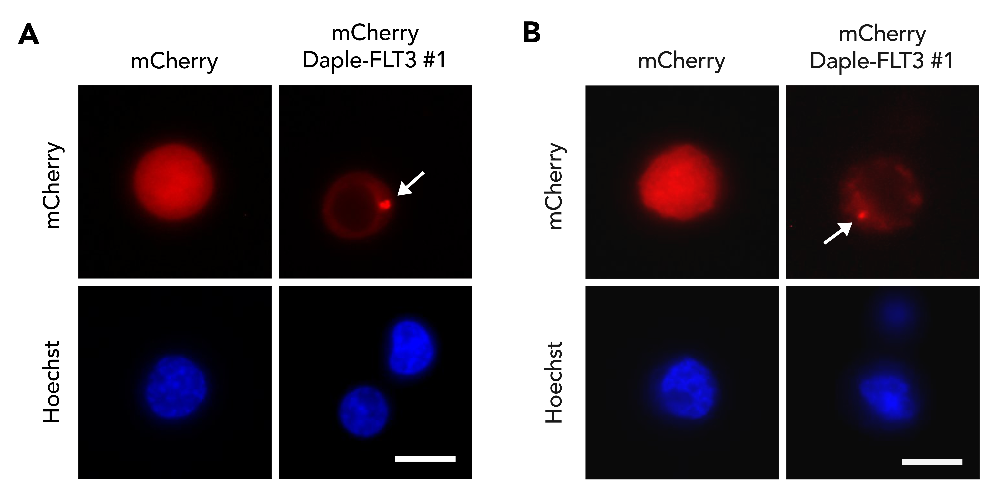
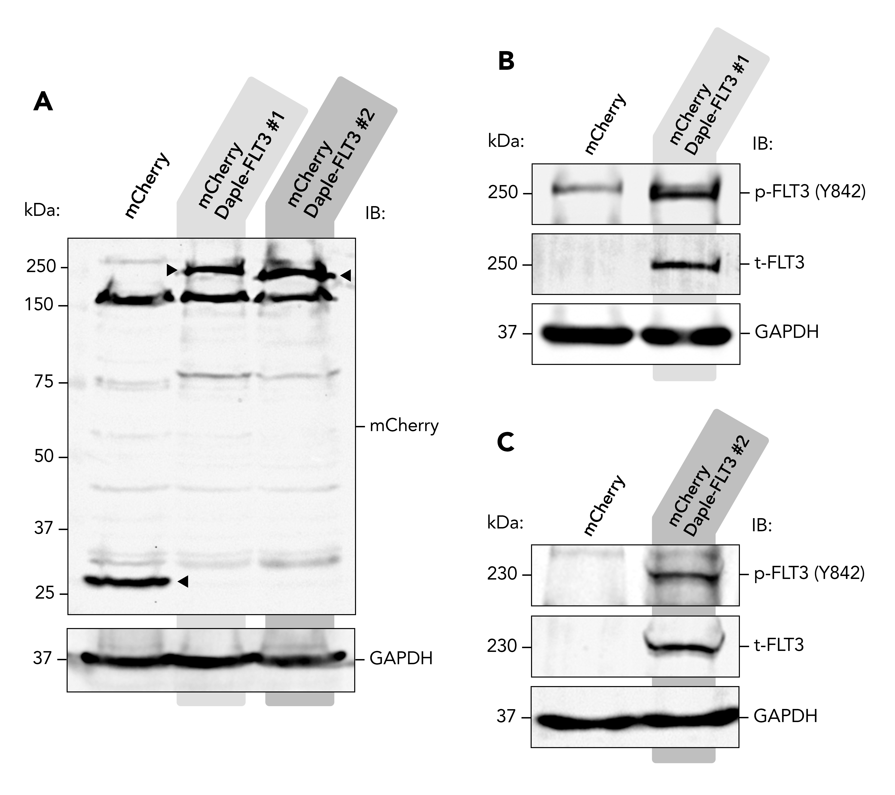
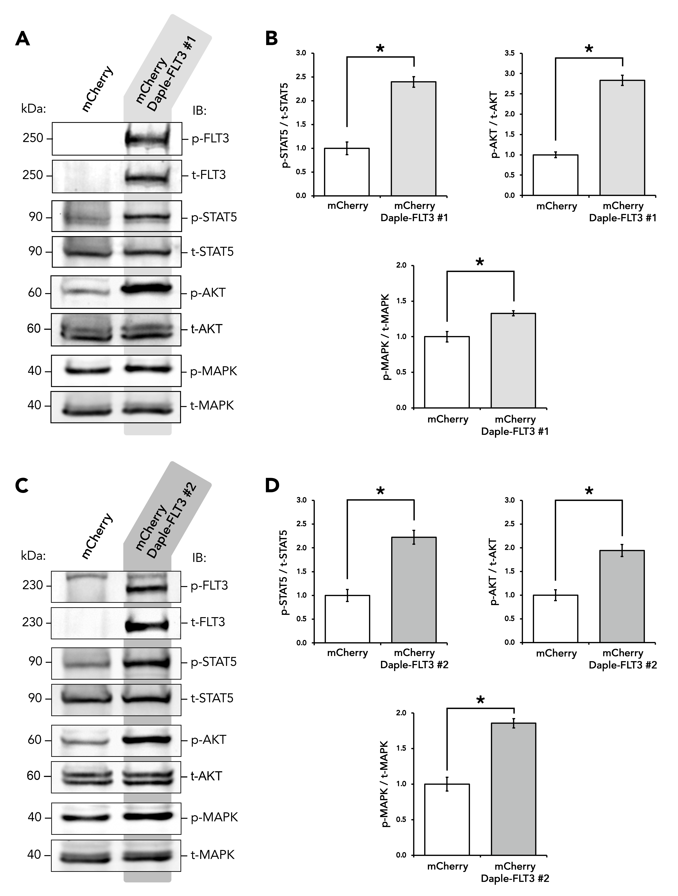
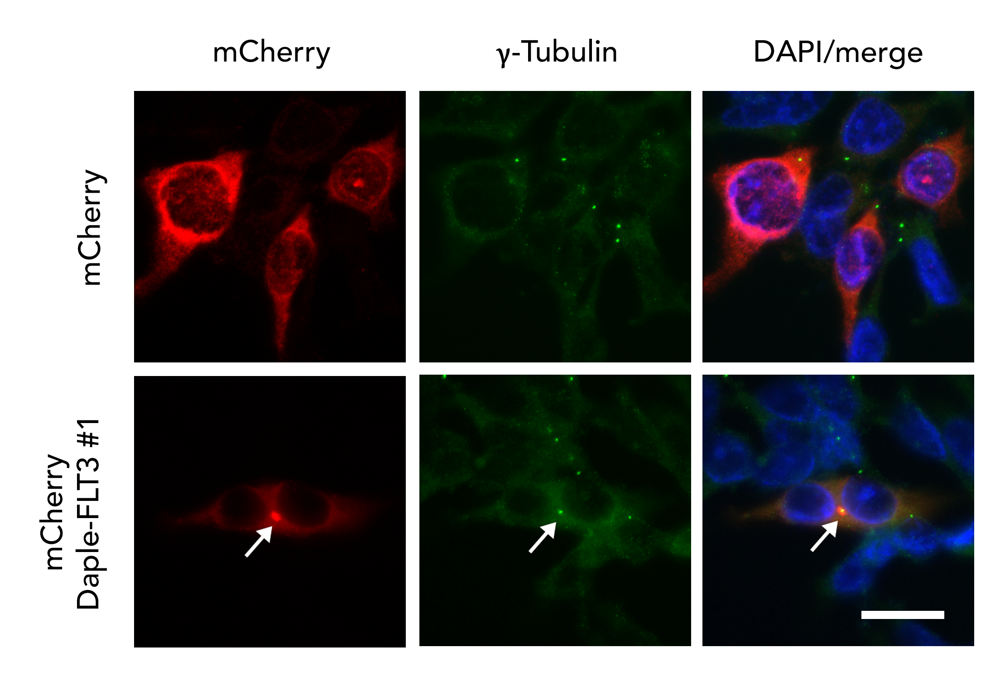

My Master’s Thesis Research
Characterizing Signaling and Localization of Daple-FLT3 Gene Fusions in Leukemia Cells
Michael Acquazzino and Jason Ear
Department of Biological Sciences \ California State Polytechnic University, Pomona
Abstract
Receptor tyrosine kinases (RTKs) are cell surface receptors that regulate cell survival, cell proliferation, and cell migration upon ligand binding. Genetic mutations leading to constitutive RTK hyperactivation and overactivation of downstream signaling are often seen in cancer. In some hematological malignancies, the coiled-coil domain (CCD) of Daple, a cell signaling scaffold protein, has been found in gene fusions with the RTKs FLT3 and PDGFRB, and to the intracellular kinase JAK2. It is hypothesized that the gene fusion product causes the tyrosine kinase domain of FLT3 to become activated and mislocalized in cells, leading to rampant cell signaling of key molecules such as MAPK, AKT, and STAT5. Using fluorescently tagged Daple-FLT3, it was shown that the gene fusion is subcellularly localized across all leukemia cell lines tested. Ectopic expression demonstrated activation of the kinase domain and subsequent increases in phosphorylation of STAT5a, AKT, and MAPK. Further investigation is needed to identify changes in phenotype and transcriptional activity associated
Background
Two unique gene fusions between the genes Daple and FLT3 have been identified in two separate chronic myeloid leukemia patients (Figure 1). The FLT3 gene codes for a receptor tyrosine kinase (RTK) subunit involved in Ras/Raf/MAPK, AKT, and Jak/STAT signaling. The Daple (CCDC88C) gene codes for a scaffolding protein involved in Wnt signaling.
It is hypothesized that the Daple-FLT3 gene fusion proteins will localize to the centrosome because the protein lacks the FLT3 transmembrane domain and contains a leucine-rich region of Daple known as the coiled-coil domain (CCD) (Figure 1). It is further hypothesized that the Daple CCD of the Daple-FLT3 gene fusion protein aids in dimerization of the attached FLT3 tyrosine kinase domain, which is then auto-phosphorylated on tyrosine (Y) 842, thereby activated. Once activated, it will participate in STAT5, AKT, and/or MAPK signaling independent of an extracellular ligand.
Constitutively active Daple-FLT3 protein that can participate in Ras/Raf/MAPK, AKT, and/or Jak/STAT5 signaling would be beneficial to cancer because these pathways are responsible for activating genes that mediate cell proliferation, cell survival, and/or cell migration.

Figure 1. Gene Map of the Known Daple-FLT3 Gene Fusions. Gene structure of Daple wild-type (WT), FLT3 WT, and the two currently identified Daple-FLT3 gene fusions. Protein domains are labelled.
Results

Figure 2. Live K562 Cells Expressing Ectopic Daple-FLT3 #1 Proteins. K562 cells expressing ectopic mCherry, mCherry-Daple-FLT3 #1 (A), and mCherry-Daple-FLT3 #2 (B) proteins. Images were taken while cells were mounted in low-melt agar on slides. The nuclei of cells were stained with Hoechst33342 (shown in blue). The mCherry control and fluorescent-tagged Daple-FLT3 #1 proteins were imaged live (shown in red). The white arrow denotes the localization of the gene fusion proteins. Images were captured 48 hours post-transfection at 63X magnification using an Olympus X100 microscope and CellSens image capture software. Scale bars represent 10 µm.

Figure 3. Live Leukemia Cells Expressing Ectopic Daple-FLT3 #1 Proteins. Jurkat (A) and THP-1 (B) cells expressing ectopic mCherry and mCherry-Daple-FLT3 #1 proteins. Scale bars represent 10 µm. Images were taken while cells were mounted in low-melt agar on slides. The nuclei of cells were stained with Hoechst33342 (shown in blue). The mCherry control and fluorescent-tagged Daple-FLT3 #1 proteins were imaged live (shown in red). The white arrow denotes the localization of the gene fusion proteins. Images were captured 48 hours post-transfection at 63X magnification using an Olympus ___ microscope and ____ image capture software.

Figure 5. Activation of the Daple-FLT3 Gene Fusion Proteins. Lysates of transfected K562 cells expressing fluorescent-tagged constructs were run on SDS-PAGE gels and tyrosine phosphorylation on FLT3 was assessed by Western blotting. A) Ectopic expression of tagged Daple-FLT3 constructs (mutants #1 and #2) and mCherry control were confirmed with an anti-mCherry antibody. Target proteins are denoted with carrots. B) Phosphorylated FLT3, p-FLT3, of the Daple-FLT3 constructs (mutant #1 and #2) were detected using a phospho-tyrosine specific (pY842) antibody.

Figure 6. Analysis of Signaling Pathways Modulated by Daple-FLT3 Gene Fusions. Lysates of transfected K562 cells expressing Daple-FLT3 constructs were run on SDS-PAGE gels and RTK signaling pathway activation was assessed by Western blotting. The change in signaling activity was determined by densitometry. For Daple-FLT3 #1 [A] and Daple-FLT3 #2 [C], total-FLT3, phospho-FLT3 (Y842), total-STAT5, phospho-STAT5a (Y692), total-AKT, p-AKT (S473), t-MAPK1/2, p-MAPK1/2 (T202/Y204) were detected. Immunoblots for each RTK signal protein (n=3) were quantified via densitometry and are represented as number-fold change in phospho/total STAT5, AKT, and MAPK in cells expressing Daple-FLT3 #1 [B] and Daple-FLT3 #2 [D] (*p<0.05). Graphs are normalized to their respective mCherry control. P-values were determined by unpaired, one-tailed Student’s t-test.
Potential Impact and Future Directions

Description.

Description
Methods
The genes for mCherry and both Daple-FLT3 gene fusions were cloned into selectable expression vectors using the Multisite Gateway Cloning system. The constructs (mCherry, Daple-FLT3 #1 and #2) were expressed in cells (K562, Jurkat, THP-1, HEK293) via transfection. Cells were cultured for 48 hours in 6-well plates before harvesting for cell lysates (Figures 5, 6), use with live cell imaging (Figures 2, 3), or immunostaining (Figure 4).
Activation of the Daple-FLT3 kinase were determined by Western blot. K562 whole cell lysates (WCLs) were collected before running on SDS-PAGE gels for Western blotting. Western blotting was used to probe for mCherry, total FLT3, phosphorylated FLT3 (Y842), and GAPDH in WCLs (Figure 5).
Cell signaling activity was measured and quantified by Western blot. The total (t-) and phosphorylated (p-) forms of the signaling proteins STAT5, AKT, and MAPK were probed for in transfected K562 WCLs.
Live cell staining was used to locate fluorescently-tagged proteins (mCherry, Daple-FLT3 #1 and #2) expression in real time in live K562 cells adhered to coverslips (Figures 2, 3). The nuclei of cells were stained using Hoescht33342 stain.
Supplemental Figures

Figure S1

Figure S2.

Figure S3. Ectopic mCherry-Daple-FLT3 #1 in Fixed HEK293 Cells. Images were taken while cells were mounted with AntiFade on slides. The nuclei of cells were stained with DAPI (shown in blue). The centrosomes of cells were stained through gamma-tubulin (shown in green). The mCherry control and fluorescent-tagged Daple-FLT3 #1 proteins were imaged in immunostained cells (shown in red). The white arrow denotes the localization of the gene fusion proteins. Cells were MeOH fixed 48 hours post-transfection then imaged at 60X magnification using a Nikon ___ microscope and ____ image capture software. Scale bar represents 50 µm.